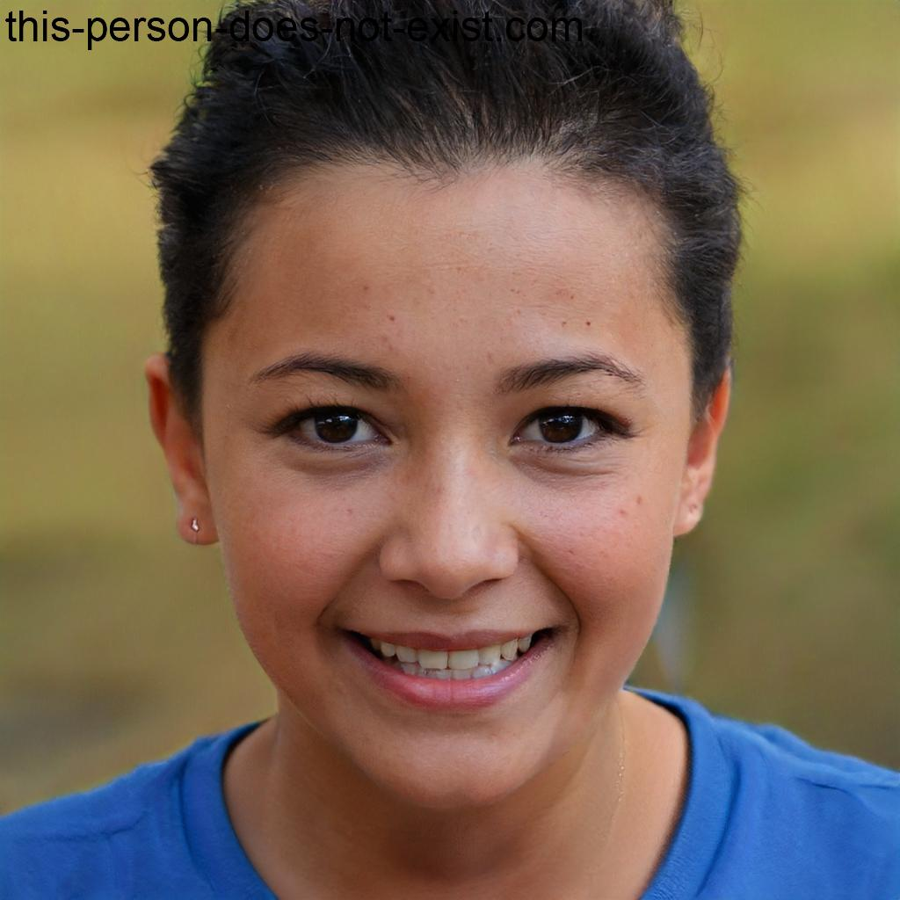

Unsere Philosophie
Foodtrucks gibt es viele, aber nur einer verkauft die besten Tacos und bringt sie dir direkt in die Innnenstadt Mannheims. Unser Anliegen ist es unsere Kunden durch guten Service, Professionalität und natürlich gutes Essen zu begeistern! Unser Angebot zeichnet sich durch Vielfältigkeit und die Liebe zum Detail aus und unsere Kunden sollen nicht nur mit einem Taco oder Burrito in der Hand, sondern auch mit Zufriedenheit von unserem Foodtruck wiederkommen können.